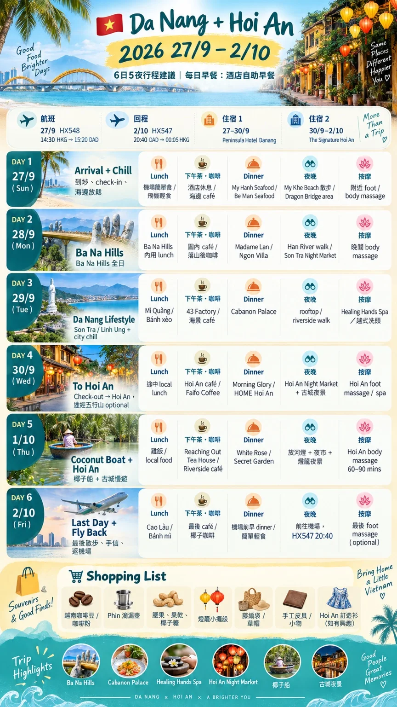

航班與住宿
去程 · 香港航空 HX548
27/9 香港 14:30 起飛 · 峴港 15:20 抵達
回程 · 香港航空 HX547
2/10 峴港 20:40 起飛 · 3/10 香港 00:05 抵達
峴港 · 3 晚
27–30/9 · Peninsula Hotel Danang
會安 · 2 晚
30/9–2/10 · The Signature Hoi An
航班用出發及抵達地嘅當地時間。早餐每日留喺酒店食自助餐。
六日行程
按原本嘅行程圖整理。撳開每一日睇食飯、咖啡、晚間活動同按摩選項。
27/9（日）抵埗・美溪海灘
- 主要安排
- 到埗後入住酒店，留返時間喺海邊放鬆。
- 午餐
- 機場簡單食，或者飛機輕食。
- 下午茶・咖啡
- 酒店休息，或者搵間海邊 café。
- 晚餐
- My Hanh Seafood 或 Be Man Seafood。
- 夜晚
- 美溪海灘散步，或者去龍橋一帶。
- 按摩
- 酒店附近足底或全身按摩。
28/9（一）巴拿山一日遊
- 主要安排
- 全日留畀巴拿山。
- 午餐
- 巴拿山園內午餐。
- 下午茶・咖啡
- 園內 café，或者落山後再飲咖啡。
- 晚餐
- Madame Lan 或 Ngon Villa。
- 夜晚
- 漢江邊散步，或者去山茶夜市 Son Tra Night Market。
- 按摩
- 晚間全身按摩。
29/9（二）山茶半島・峴港慢遊
- 主要安排
- 山茶半島、靈應寺，再返市區慢慢行。
- 午餐
- 廣南麵 Mì Quảng 或越南煎餅 Bánh xèo。
- 下午茶・咖啡
- 43 Factory 或海景 café。
- 晚餐
- Cabanon Palace。
- 夜晚
- 天台酒吧，或者沿河散步。
- 按摩
- Healing Hands Spa 或越式洗頭。
30/9（三）由峴港轉去會安
- 主要安排
- 峴港退房，轉住會安。途中可選擇停五行山。
- 午餐
- 沿途搵間本地小店食午餐。
- 下午茶・咖啡
- 會安 café 或 Faifo Coffee。
- 晚餐
- Morning Glory 或 HOME Hoi An。
- 夜晚
- 會安夜市加古城夜景。
- 按摩
- 會安足底按摩或 spa。
1/10（四）椰子船・會安古城
- 主要安排
- 搭椰子船，再留半日慢行古城。
- 午餐
- 雞飯或其他會安地道小食。
- 下午茶・咖啡
- Reaching Out Tea House 或河邊 café。
- 晚餐
- White Rose 或 Secret Garden。
- 夜晚
- 放河燈、行夜市、睇燈籠夜景。
- 按摩
- 會安全身按摩，預 60–90 分鐘。
2/10（五）買手信・返香港
- 主要安排
- 最後散步、補買手信，再去峴港機場。
- 午餐
- 高樓麵 Cao Lầu 或越南法包 Bánh mì。
- 下午茶・咖啡
- 旅程最後一杯咖啡，可以揀椰子咖啡。
- 晚餐
- 去機場前食早啲，或者簡單輕食。
- 夜晚
- 回程 HX547，峴港當地時間 20:40 起飛。
- 按摩
- 有時間可以加最後一次足底按摩。
PLACES & EXPERIENCES
地方手記
- 景點
- 巴拿山、山茶半島同會安夜市。
- 食嘢
- 廣南麵、海鮮，同埋搵間海景 café 歇一歇。
- 手信
- 越南咖啡豆、滴漏壺同會安燈籠。 睇詳情
- 住宿
- Peninsula Hotel Danang／The Signature Hoi An
影像誌



買返屋企嘅手信
- 越南咖啡豆或咖啡粉
- Phin 越南咖啡滴漏壺
- 腰果、果乾、椰子糖
- 燈籠小擺設
- 藤編袋或草帽
- 手工皮具或小物
- 會安訂造衫（有興趣可睇）